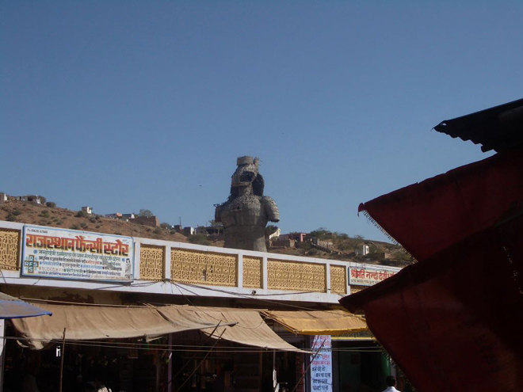
.
Mehandipur Balaji Mandir is an extraordinary exorcism temple, dedicated to the Hindu God Hanuman. The name Balaji is applied to Shri Hanuman in several parts of India because the childhood (Bala in Hindi / Sanskrit) form of the Lord is especially celebrated there. People bring their loved ones who are suffering from possession to have bad spirits exorcised through prayer and rituals. At this time, the only people who can enter the temple are the holy men and the victims - services are relayed to the crowds outside on crackly video screens.
Below are two Mehandipur Balaji idols from the temple.
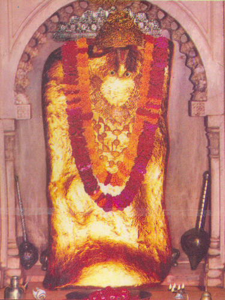
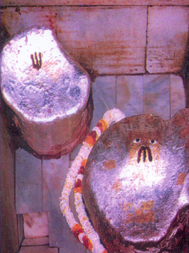
'Dussehra' celebrates the Hindu god Rama's victory over Ravana and the triumph of good over evil. The epic Ramayana tells the story of Lord Rama who wins the lovely Sita for his wife, only to have her carried off by Ravana, the demon king of Lanka. An effigy of Ravana is burned which marks 'Dussehra', burning of evil and spreading of light marking 'Diwali'.
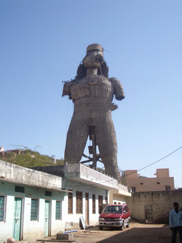
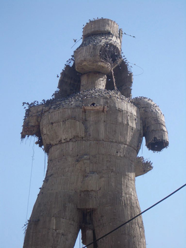
Believers say you should not take items bought from around the temple away with you since they could bring you bad luck. But the number of stalls lining the way to the temple indicates that not everyone heeds these solemn warnings.
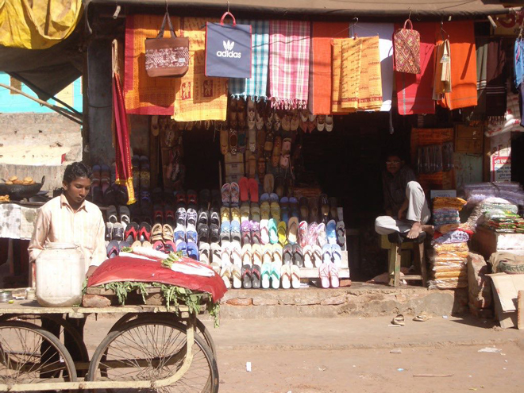
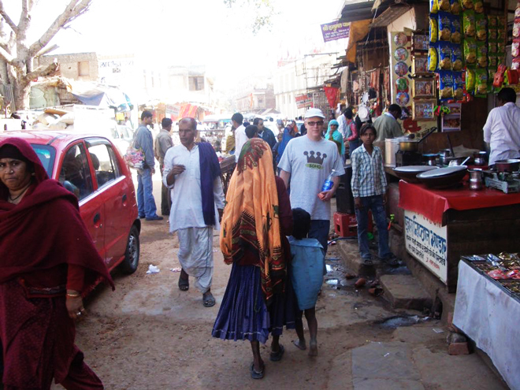
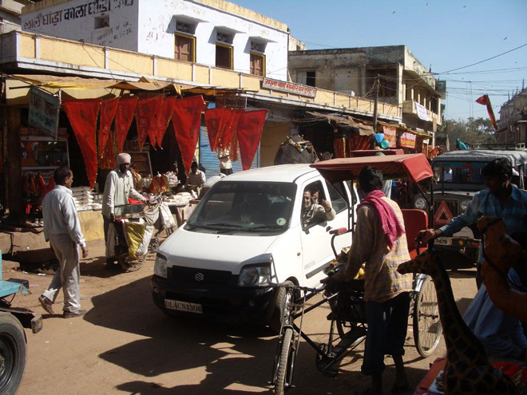
Outside Balaji we passed vast brick works with odd conical-shaped chimneys. Not quite the dark Satanic mills of lore, they still appeared strange in this arid landscape.
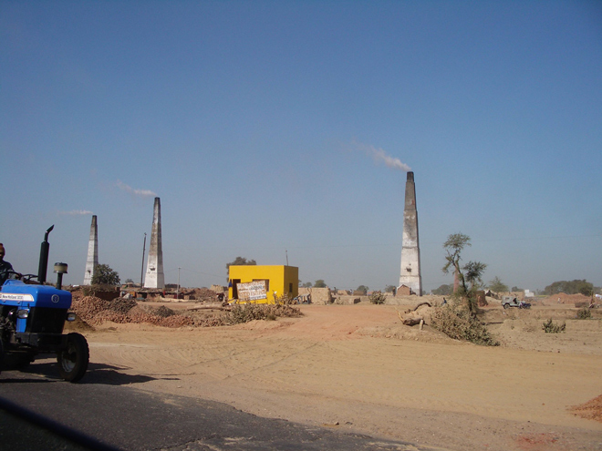
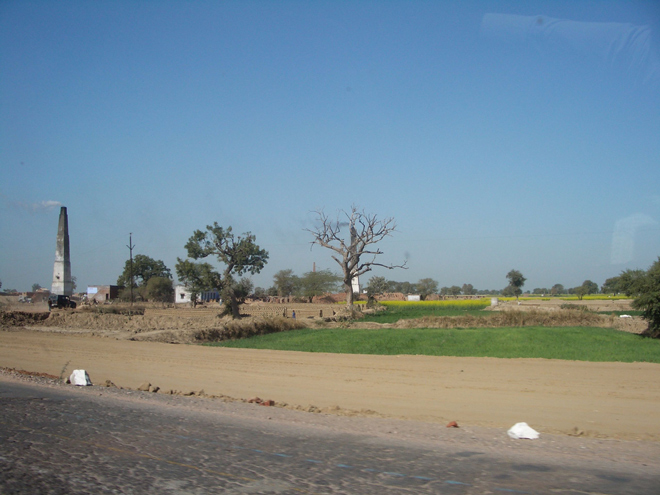
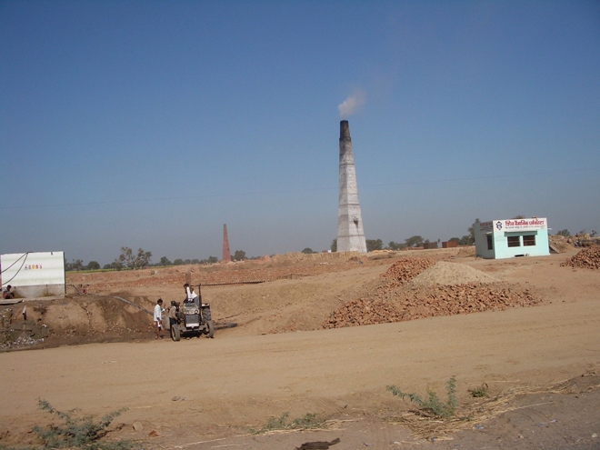